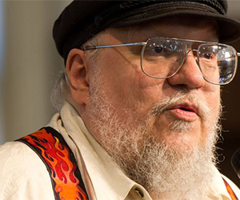

The Starks of Winterfell
George R.R. Martin
 |
George R. R. Martin was born on September 20, 1948, in Bayonne, New Jersey, the son of longshoreman Raymond Collins Martin and his wife Margaret Brady Martin who also had two daughters, sisters Darleen and Janet. The family lived in a federal housing project near to the Bayonne docks. Being poor, the young Martin lived in his imagination and began writing and selling monster stories for pennies to other neighborhood children, dramatic readings included. He also wrote stories about a mythical kingdom populated by his pet turtles; the turtles died frequently in their toy castle, so he finally decided they were killing each other off in "sinister plots." Martin attended Mary Jane Donohoe School and then later Marist High School. While there he became an avid comic book fan, developing a strong interest in the innovative superheroes being published by Marvel Comics. Fantastic Four No. 20 (Nov 1963) printed a letter Martin wrote to the editor, the first of many sent from his family's home at 35 E. First Street, Bayonne, NJ. Other fans wrote him letters, and through such contacts Martin joined the fledgling comics fandom of the era, writing fiction for various fanzines. In 1965 Martin won comic fandom's Alley Award for his prose superhero story "Powerman vs. The Blue Barrier," the first of many awards he would go on to win for his fiction.  In 1970 Martin earned a B. S. in Journalism from Northwestern University, Evanston, Illinois, graduating summa cum laude; he went on to complete his M. S. in Journalism in 1971, also from Northwestern. Eligible for the draft during the Vietnam War, to which he objected, Martin applied for and obtained conscientious objector status; he instead did alternative service work for two years (1972–1974) as a VISTA volunteer, attached to the Cook County Legal Assistance Foundation. He also directed chess tournaments for the Continental Chess Association from 1973 to 1976. Then from 1976 to 1978 he was an English and journalism instructor at Clarke University (then Clarke College) in Dubuque, IA, becoming Writer In Residence at the college from 1978 to 1979. Martin began selling science fiction short stories professionally in 1970, at age 21. His first story, "The Hero", sold to Galaxy magazine and was published in its February 1971 issue; other sales soon followed. The first story of his nominated for the Hugo Award and the Nebula Award was With Morning Comes Mistfall, published in 1973 by Analog magazine. A member of the Science Fiction and Fantasy Writers of America (SFWA), Martin became the organization's Southwest Regional Director from 1977 to 1979; from 1996 to 1998 he served as its vice president. In 1976, for Kansas City's MidAmeriCon, the 34th World Science Fiction Convention (Worldcon), Martin and his friend and fellow writer-editor Gardner Dozois conceived of and organized the first Hugo Losers Party for the benefit of all past and present Hugo-losing writers, their friends, and family the evening following the convention's Hugo Awards ceremony. Martin was nominated for two Hugos that year but ultimately wound up losing both awards, for the novelette "...and Seven Times Never Kill Man" and the novella The Storms of Windhaven, co-written with Lisa Tuttle. The Hugo Losers Party became an annual Worldcon event thereafter, its formal title eventually evolving into something a little more politically correct as both its size and prestige grew. Although much of his work is fantasy or horror, a number of his earlier works are science fiction occurring in a loosely defined future history, known informally as "The Thousand Worlds" or "The Manrealm". He has also written at least one piece of political-military fiction, "Night of the Vampyres", collected in Harry Turtledove's anthology The Best Military Science Fiction of the 20th Century. The unexpected commercial failure of Martin's fourth book, The Armageddon Rag (1983), "essentially destroyed my career as a novelist at the time", he recalled. It began his career in television, however, as a result of a Hollywood option on that novel that then led to him being hired, first as a staff writer and then as an Executive Story Consultant, for the revival of the Twilight Zone. When the CBS series ran its course, Martin and other Twilight Zone staff writers migrated over to the already underway satirical science fiction series Max Headroom. While there he wrote scripts and created the show's Ped Xing character, the president of the Zic Zak corporation, Network 23's primary sponsor. Before his completed scripts could go into production, the ABC show was canceled in the middle of its second season. Martin then became a producer on the dramatic fantasy series Beauty and the Beast; in 1989 he became the show's co-supervising producer. During this same period, he also worked in print media as a book series editor, overseeing the development of the lengthy and still on-going Wild Cards series, which takes place in a shared universe in which a small slice of post–World War II humanity gains superpowers after the release of an alien-engineered virus. In Second Person Martin "gives a personal account of the close-knit role-playing game (RPG) culture that gave rise to his Wild Cards shared-world anthologies". Martin's own contributions to the multiple-author series often feature Thomas Tudbury, "The Great and Powerful Turtle", a powerful psychokinetic whose flying "shell" consisted of an armored VW Beetle. As of June 2011, 21 Wild Cards volumes had been published in the series; earlier that same year, Martin signed the contract for the 22nd volume, Low Ball, which has since been completed and will be published by Tor Books in mid-summer of 2014. In early 2012 Martin signed another Tor contract for the 23rd Wild Cards volume, High Stakes. Martin's novella, Nightflyers, was adapted into a 1987 feature film of the same title; he was not happy about having to cut plot elements for the screenplay's scenario in order to accommodate the film's small budget. In 1991 Martin briefly returned to writing novels and began what would eventually turn into his epic fantasy series A Song of Ice and Fire, which will be seven volumes. The first A Game of Thrones was published in 1996. In November 2005 A Feast for Crows, the fourth novel in this series, became The New York Times No. 1 Bestseller and also achieved No. 1 ranking on The Wall Street Journal bestseller list. In addition, in September 2006, A Feast for Crows was nominated for both a Quill Award and the British Fantasy Award. The fifth book, A Dance with Dragons, was published in July 2011, quickly becoming a huge international bestseller, including a No. 1 ranking on the New York Times Bestseller List and many others; it remained on the NY Times list for more than a year. The series has received critical praise from authors, readers, and critics alike. In 2012 A Dance With Dragons made the final ballot for science fiction and fantasy's Hugo Award, World Fantasy Award, Locus Poll Award, and the British Fantasy Award; the novel went on to win the Locus Poll Award for Best Fantasy Novel. |